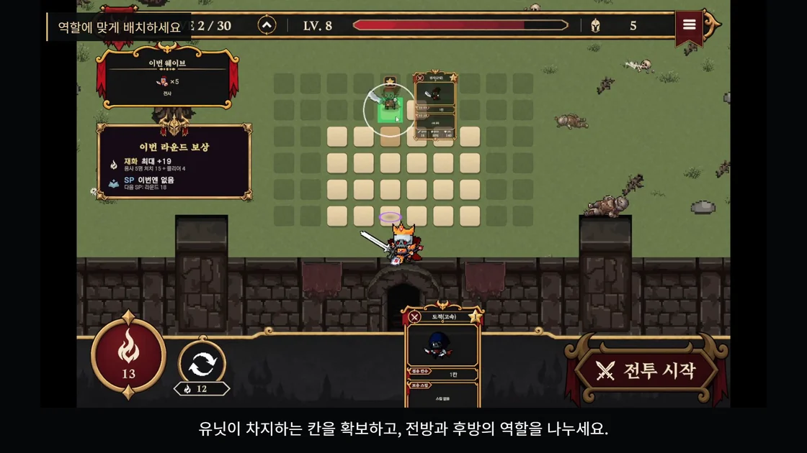
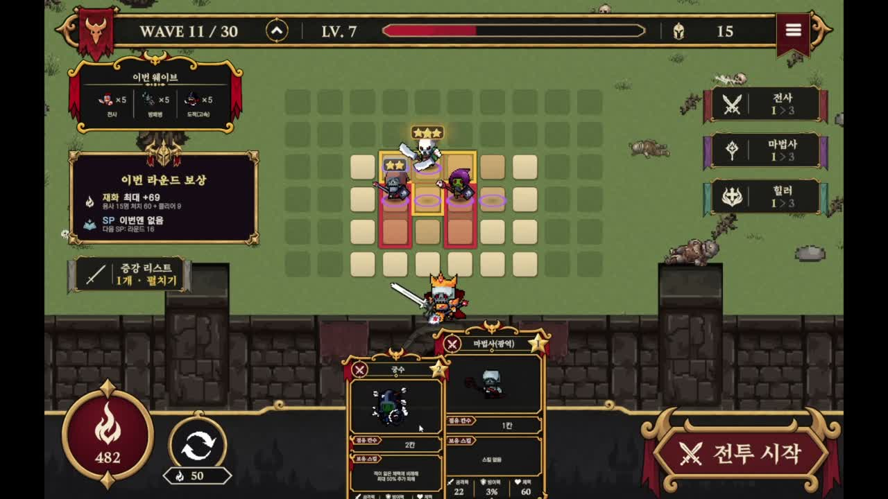
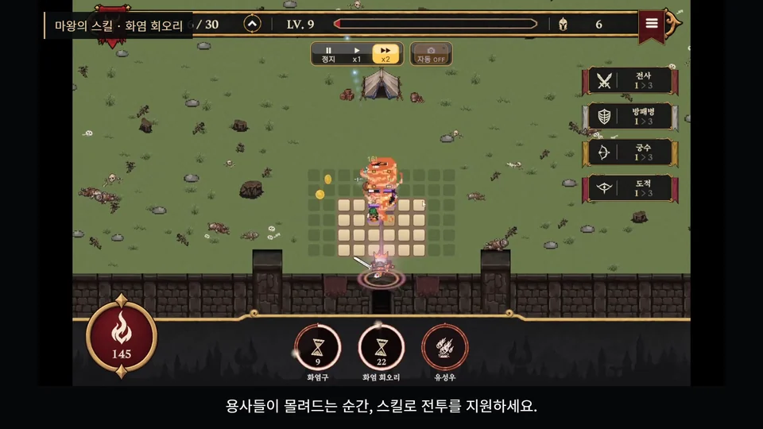
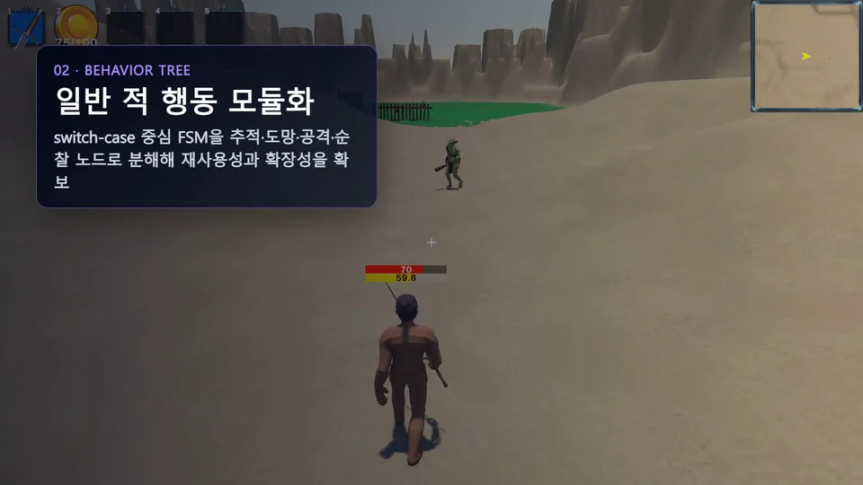
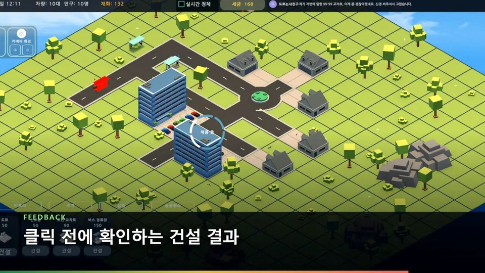

개인 QA 실습 · BUG-GRID-001
유닛을 보관해도
이전 배치 칸에 원이 남습니다
직전 배치 칸에 남은 보라색 원을 발견하고, 같은 전사를 A와 B에 배치해 발생 조건을 비교했습니다. 빈 칸이 점유된 것처럼 보였지만 재배치와 전투 진행은 가능했습니다.
V11 대표 증거는 별도 제출 QA 엑셀에서 확인할 수 있습니다.
GAME QA PORTFOLIO
Unity·C# 팀 개발과 STOVE 출시 경험을 바탕으로 게임을 검증합니다. 출시 빌드의 결함 재현과 개발 중 수정·재검증을 기록했습니다.

출시 이후 개인 QA 실습
STOVE · 보통 난이도
TC-SAVE-001은 화면에서 확인한 범위에서 통과했습니다. 개발 당시 검증 H-01·H-02는 이 집계에서 제외했습니다.
출시 빌드의 결함 재현과 개발 중 수정·재검증 기록

개인 QA 실습 · BUG-GRID-001
직전 배치 칸에 남은 보라색 원을 발견하고, 같은 전사를 A와 B에 배치해 발생 조건을 비교했습니다. 빈 칸이 점유된 것처럼 보였지만 재배치와 전투 진행은 가능했습니다.
V11 대표 증거는 별도 제출 QA 엑셀에서 확인할 수 있습니다.
팀 개발 당시 · UNITY PLAY MODE
테스트용 Bootstrap Retry 직접 호출에서 결과창이 남는 오류를 수정했습니다. 결과 데이터 해제 시 결과창을 닫고, 같은 경로와 주변 메뉴·입력 동작을 검증했습니다.
사전 조건 · STOVE 출시 빌드, 보통 난이도, 초기 지급 1성 전사 1기(합성 없음), 빈 보관 슬롯. A 바로 위의 빈 칸 B에 전사를 배치할 발판을 확보합니다.
B를 비운 채 웨이브 1에 진입합니다. 00:06 전투 시작, 00:15 클리어, 00:21 웨이브 2 준비를 확인했습니다.
웨이브 2 준비에서 전사를 보관하면 전사는 사라지고 A의 원이 남았습니다. 확인 구간 00:23–00:24.
같은 전사를 B에 배치해도 전투 시작 전 빈 A의 원이 남았습니다. 확인 구간 00:32–00:42, 후반은 전투 진입입니다.
웨이브 3 준비에서 전사를 보관하자 B에 원이 남고 A의 원은 사라져 있었습니다. 확인 구간 00:50–00:54.
V11 대표 이미지 4장은 지원서에 별도 첨부하는 QA 엑셀의 ‘결함 기록’에서 확인할 수 있습니다.
A의 표시 해제 시점, 내부 원인, 수정 여부는 미확인입니다. 수정 후 재테스팅 기록은 없습니다.
패배 후 테스트용 Bootstrap Retry를 직접 호출하면 이전 결과창이 남았습니다. 결과 데이터가 해제될 때 결과창도 닫히도록 수정하고, 검증 결과를 PR #83으로 팀에 공유했습니다.
개발 당시 Unity Play Mode 이력입니다. STOVE 사용자 경로 TC-RETRY-001은 별도의 출시 빌드 테스트입니다.
증거 V1·V2·V4. V1·V2는 수행자가 동일 실행으로 확인했고 영상 사이 조작은 미확인입니다. V4는 추가 관찰이며 내부 Retry·실행 로그·다른 난이도와 모드별 독립 검증은 미확인입니다.
사후 품질 리스크 · 패배 뒤 로비나 준비 화면으로 이동할 수 없으면 새 도전을 시작하기 어렵습니다.
증거 V3·V4. 화면에서 비교한 성장 항목에 한합니다. 정확한 XP·피해·감속 수치, 다른 특성·스킬과 내부 저장 데이터는 미확인입니다.
사후 품질 리스크 · 패배로 획득한 성장 상태가 사라지면 다음 도전의 성장 경험이 달라집니다.
증거 V4·V5·U-01. 정상 종료와 STOVE의 ‘실행’은 수행자 확인입니다. 정확한 누적 XP는 미확인입니다.
사후 품질 리스크 · 레벨·특성·스킬이 복원되지 않거나 새 도전에 적용되지 않으면 이전 진행을 이어가기 어렵습니다.
사전 조건 · 보통 난이도, 초기 지급 1성 전사 1기(합성 없음), 빈 보관 슬롯. A 바로 위 빈 칸 B에 배치할 수 있도록 발판을 확보합니다.
주 증거 V11. 내부 원인, 정확한 표시 해제 시점, 재현율과 수정 여부는 미확인입니다.
사후 품질 리스크 · 빈 칸이 점유된 것처럼 보이면 다음 유닛을 둘 위치를 잘못 판단할 수 있습니다.
STOVE 최초 출시 빌드의 보통 난이도에서 확인했습니다. V1–V5 실행일은 입니다. Windows 11 Home 25H2, OS 빌드 26200.9974와 전체화면·창 모드 사용은 V1–V5 수행자 기록입니다.
ENV-01 원본 이미지는 미첨부 상태입니다. 영상별 화면 모드와 실제 해상도, V6–V9·V11의 실행일과 OS는 미확인입니다.
사후 품질 리스크는 각 테스트 상세에 정리했습니다.

STOVE 출시 · 4인 팀 · 6주
개발 당시 코어루프, 그리드 배치, 일반 보상과 결과·재도전 연동을 맡았습니다. 재도전 UI를 수정·검증하고 STOVE 출시에 참여했습니다.
출시 이후 개인 QA 실습으로 TC 4건을 실행하고 그리드 결함을 보고했습니다.
용사때문에 레벨업 담당 기능 보기
3D 액션 · 2인 팀
적 행동과 구역별 몬스터 생성을 맡았습니다. 공격 쿨타임의 참조 불일치와 Addressables 비동기 생성 중 상태가 바뀌는 조건을 분석했습니다.
Felheim 담당 기능 보기
방치형 시뮬레이션 · 5인 팀
건설 입력과 배치 피드백을 맡았습니다. 빠른 드래그에서 도로가 끊기는 조건을 확인하고 공개 PR에 입력 순서 회귀 검증을 기록했습니다.
IDLE CITY 회귀 테스트 보기상세 테스트 케이스, 실행 결과, 결함 보고서와 V11 대표 증거는 지원서에 별도 첨부하는 QA 엑셀에 정리했습니다.